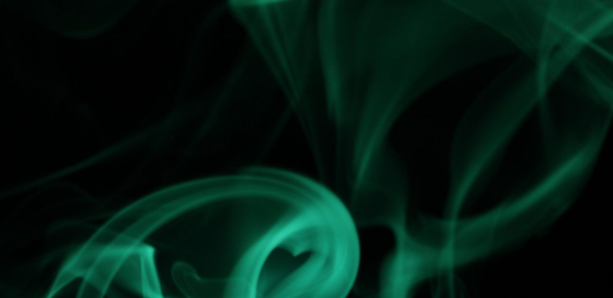

Wie is de Green Goblin?
Groen, gemeen en altijd in de lucht. Achter het masker van de Green Goblin zit Norman Osborn. Hier lees je hoe hij de Goblin werd, wat hij kan, wie er nog meer Goblin was en in welke films hij zit.

In het kort
De Green Goblin is Norman Osborn, de vader van Harry Osborn en een van de bekendste vijanden van Spider-Man. Hij vliegt op een glider en gooit bommen die op pompoenen lijken.
| Echte naam | Norman Osborn |
| Wat hij doet | Schurk, en een van de grootste vijanden van Spider-Man |
| Superkracht | Bovenmenselijk sterk, snel en slim, en hij geneest snel |
| Eerste keer in een strip | The Amazing Spider-Man nummer 14, 1964 |
| Bedacht door | Stan Lee en Steve Ditko |
| Gespeeld door | Willem Dafoe, en Chris Cooper in The Amazing Spider-Man 2 |
| Hoort bij | De schurken van Spider-Man |
Hoe hij de Green Goblin werd
In de strips krijgt Norman Osborn zijn krachten van een scheikundig middel, de Goblin-formule. Dat middel maakt hem sterker en slimmer, maar ook gek en gemeen. Heel lang wist niemand wie er achter het masker zat. Pas in 1966, in The Amazing Spider-Man nummer 39, kwamen de lezers erachter dat het Norman Osborn was.
Wat hij kan
- Supersterk en snel. Hij is sterker, sneller en taaier dan een gewoon mens.
- Heel slim. Zijn verstand is net zo gevaarlijk als zijn kracht.
- Snel genezen. Wonden genezen bij hem veel sneller dan bij anderen.
- De Goblin Glider. Een vliegende plank die ongeveer 145 kilometer per uur kan gaan.
- Pompoenbommen. Bommen in de vorm van een pompoen.
- Vleermuismesjes. Vlijmscherpe mesjes in de vorm van een vleermuis.
Wie er om hem heen staan
- Harry Osborn: zijn zoon, en de tweede Green Goblin. In de verhalen is Harry een vriend van Peter Parker.
- Bart Hamilton: hij werd later ook Green Goblin.
- Phil Urich: nog iemand die de naam Green Goblin heeft gedragen.
Zijn tegenstanders
- Spider-Man: Peter Parker is zijn grote vijand, en de Goblin daagt hem steeds opnieuw uit.
- The Night Gwen Stacy Died: in dit beroemde stripverhaal (The Amazing Spider-Man nummer 121 en 122) komt Gwen Stacy door de Green Goblin om het leven. De Goblin zelf sterft in hetzelfde verhaal na een gevecht met Spider-Man.
In welke films zit hij?
De Green Goblin is in deze films te zien:
- De Spider-Man-trilogie van Sam Raimi (2002 tot 2007): Willem Dafoe speelt Norman Osborn, en James Franco speelt zijn zoon Harry, die later ook de Goblin wordt
- The Amazing Spider-Man 2 (2014): Chris Cooper speelt Norman Osborn en Dane DeHaan speelt Harry Osborn
- Spider-Man: No Way Home (2021): Willem Dafoe speelt opnieuw Norman Osborn. De film haalt via het multiversum figuren uit de oude Spider-Man films terug
👪 Tip voor ouders
De Green Goblin is een echte schurk. Zijn masker, zijn lach en zijn gevechten kunnen jonge kinderen bang maken, en in de strips gebeurt er door hem iets heel verdrietigs. Kijk voor het actuele advies bij elke film op Kijkwijzer.
💡 Wist je dat?
Toen de Green Goblin in 1964 voor het eerst in een strip stond, wist niemand wie hij was. Pas twee jaar later, in 1966, werd onthuld dat Norman Osborn achter het masker zat.
Meer weten? Bekijk alle schurken, lees wie Venom is, nog zo’n bekende tegenstander, of lees de grootste schurken van Spider-Man.
Speel het na
Speel de spannende gevechten na met dit speelgoed, met de actuele prijs bij bol:
Veelgestelde vragen
Wie is de Green Goblin?
De Green Goblin is Norman Osborn, de vader van Harry Osborn. Hij is een van de bekendste vijanden van Spider-Man.
Is Harry Osborn ook de Green Goblin?
Ja. Harry Osborn, de zoon van Norman, is de tweede die de naam Green Goblin droeg. Later deden ook Bart Hamilton en Phil Urich dat.
In welke films zit de Green Goblin?
In de Spider-Man-trilogie van Sam Raimi (2002 tot 2007) met Willem Dafoe en James Franco, in The Amazing Spider-Man 2 (2014) met Chris Cooper en Dane DeHaan, en in Spider-Man: No Way Home (2021) met opnieuw Willem Dafoe.
Wat voor wapens heeft de Green Goblin?
Hij vliegt op de Goblin Glider, gooit pompoenbommen en heeft vlijmscherpe mesjes in de vorm van een vleermuis.
Wie heeft de Green Goblin bedacht?
Stan Lee en Steve Ditko. De Green Goblin stond voor het eerst in The Amazing Spider-Man nummer 14, uit juli 1964.
Namen, jaartallen en rolverdelingen gecontroleerd op 27 september 2026.